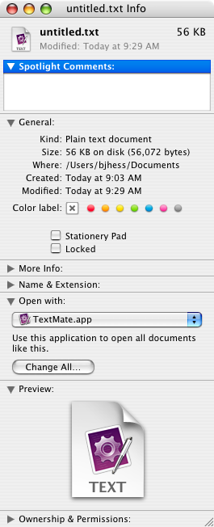
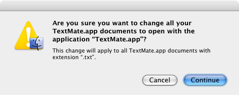

Change Default Text Editor on OS X
I am a Mac OS X rookie, and it shows. I struggled for about 20 minutes trying to figure out how to change my default text editor for TXT files from TextEdit to TextMate. Finally, it is done, and it was mostly easy.
First, select the file and press cmd-i to go to the Info screen for the file. In the “Open With” section, select your favorite text editor (mine is TextMate).

Click “Change All…” and confirm your intentions.

April 27, 2007